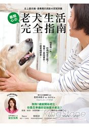

介紹寵物書籍導覽系統
2018/01/11
老犬生活完全指南：史上最完備、最專業的高齡犬居家照護全書
寵物通心術：62個通心術練習大公開
貓咪這樣教，主人好快樂 (原書名： 愛咪咪的異想世界)
天生建築家：鈴木守的109種動物巢穴大發現
狗狗這樣吃，癌細胞消失！：須崎博士的毛小孩防癌飲食指南
寵物香草藥妙方：以天然的香草藥力量，改善寵物寄生蟲、壓力性過敏、口腔疾病與心理發展問題！
狗狗這樣教，主人好輕鬆2：不打不罵不關，33招解決所有狗狗問題
給新手的海水魚飼養指南
為了下一次相逢，讓我陪你一起幸福到老：照護寵物從年輕到老、克服喪失寵物症候群的40個心得
第一次養刺蝟【漫畫版】
首頁
推薦寵物書籍
關於
上一本書
推薦寵物書籍介紹
下一本書

老犬生活完全指南：史上最完備、最專業的高齡犬居家照護全書
首頁
推薦寵物書籍
關於
關於寵物
寵物是人們最好的依靠
在寵物的成長下人們是最開心的
所以心情不好的時候可以養一隻小寵物來試試
但是領養代替購買請不要隨便棄養
謝謝大家!!